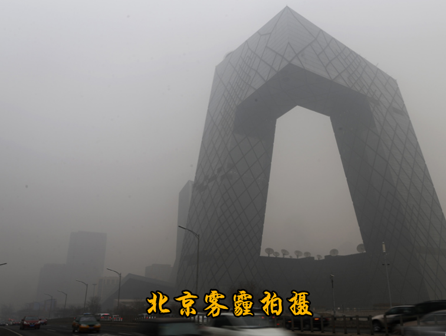

陈皓的专栏
陈皓去世的直接原因是感染新冠、间接原因是
- 在大厂的工作压力大、负面心情影响身体健康，例如焦虑
- 北京的空气空气污染、食品污染（矿物油油罐车、预制菜.etc）
2024年，有一次我在北京坐出租车的时候，司机告诉我。北京人大部分人都有鼻炎，他就是北京人。
即使不是北京人，来了北京，用不了多久就会得鼻炎。

我对他的笔记感兴趣的原因是，想知道我出生之前的社会是怎样的。也许这些笔记会启发我对于”中年危机“、”技术进步导致失业“ 等问题的新的看法。
加班没有加班费、一生勤劳的中国人
第一个故事，发生在 2001 年到 2002 年，那时我还是一个外包程序员，有一整年被当成劳动力外包进了某银行做软件开发，从早上 9 点工作到晚上 10 点，每周要从周一直工作到周六。但是我是每天晚上坚持看半个小时到 1 个小时的书，看得不多，一天 2-3 页。一年后，我看完了两本经典书，一本是《TCP/IP 详解：卷 I》，另一本是《UNIX 环境高级编程》。
第二个故事，是在 2002 年到 2003 年的时候，我到了一家做分布式系统的公司工作。因为那里的技术比较复杂，我有点跟不上，所以，周末和节假日的时候，我都会到公司来，不是工作，而是看书学习（因为那时我是一个北漂，完全没有个人电脑，只能去蹭公司的电脑）。这导致公司的物管都认识我，经常在周末和节假日的时候打我的电话，让我帮物业做点小事。比如某空调漏水，让我帮他们去把接水的桶倒一下……
计算机行业的上升期
我是 1994 年上的大学，计算机科学软件专业。在 1996 年上大二的时候，因为五笔学得好打字很快，我应征到教务处帮忙，把一些文档录入到电脑里。打了三个月的字，学校按照每千字 10 元，给了我 1000 元钱。
由于我的五笔越打越快，还会用 CCED 和 WPS 排版，于是引起了别人的注意，叫我帮忙去他的打字工作室，一个月收入 400 元钱。我的大学在昆明，这相当于当地收入的中上水平了。
后来，1997 年的时候，我帮一个开公司的老师写一些 MIS 软件，用 Delphi 和 PowerBuilder 写一些办公自动化和酒店管理的软件。一年后，老师给了我 2000 元钱。
因为动手能力比较强，当时系上的老师要干个什么事都让我帮忙。而且，因为当时的计算机人才太少太少了，所以一些社会上的人需要开发软件或是解决技术问题也都会到大学来。基本上老师们也都推荐给我。
还记得 1997 年老师推荐一个人来找我，问会不会做网页？5 个静态页，10000 元钱。当时学校没教怎样做网页，我去书店找书看，结果发现书店里一本讲 HTML 的书都没有，只好回绝说“不会做”。一年后，我才发现原来这事简单得要命。
关注技术付费点
关注技术付费点。技术付费点基本体现在两个地方，一个是，能帮别人“挣钱”的地方；另一个是，能帮别人“省钱”的地方。也就是说，能够帮助别人更流畅地挣钱，或是能够帮助别人提高效率，能节省更多的成本，越直接越好。而且这个技术或解决方案最好还是大多数人做不到的。